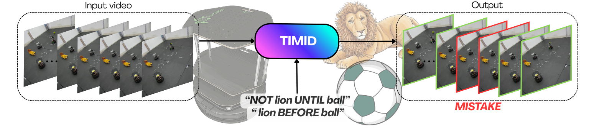
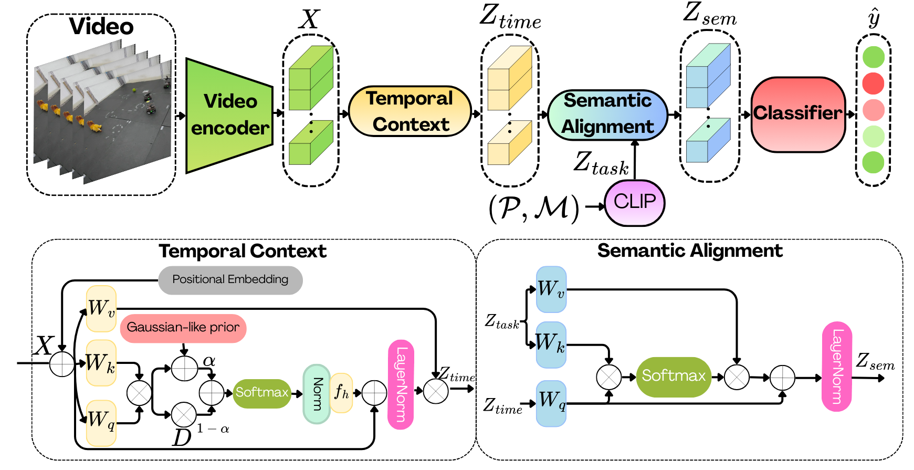

Abstract
As robotic systems execute increasingly difficult task sequences, so does the number of ways in which they can fail. Video Anomaly Detection (VAD) frameworks typically focus on singular, low-level kinematic or action failures, struggling to identify more complex temporal or spatial task violations, because they do not necessarily manifest as low-level execution errors. To address this problem, the main contribution of this paper is a new VAD-inspired architecture, TIMID, which is able to detect robot time-dependent mistakes when executing high-level tasks. Our architecture receives as inputs a video and prompts of the task and the potential mistake, and returns a frame-level prediction in the video of whether the mistake is present or not. By adopting a VAD formulation, the model can be trained with weak supervision, requiring only a single label per video. Additionally, to alleviate the problem of data scarcity of incorrect executions, we introduce a multi-robot simulation dataset with controlled temporal errors and real executions for zero-shot sim-to-real evaluation. Our experiments demonstrate that out-of-the-box VLMs lack the explicit temporal reasoning required for this task, whereas our framework successfully detects different types of temporal errors.
Overview
As robot tasks become more complex, traditional anomaly detection struggles to spot high-level, time-dependent mistakes (e.g., doing steps in the wrong order).
TIMID is a novel AI architecture that detects mistakes in robot execution videos. So, we enter a video and text prompts describing the task and the potential mistake, and then TIMID outputs a frame-by-frame prediction of any errors. TIMID is highly efficient, requiring only a single video-level label for training (weak supervision). We also introduce a new multi-robot dataset featuring controlled temporal errors to advance this field.

Method
TIMID learns to detec mistakes by aligning what it sees with what it describe the task and mistake. The architecture relies on four key components:
- Video Encoder: Extracts high-level visual features from short video clips.
- Temporal Context: Tracks both local and global context to understand when actions happen.
- Semantic Alignment: Uses a text encoder to match the visual data with the text prompts
- Classifier: Generates a final frame-by-frame score indicating exactly when a mistake occurs.

Results
The table below summarizes the Average Precision (AP), Average Recall (AR), and F1 scores achieved by TIMID across various datasets included in our benchmark suite.
| Dataset | AP | AR | F1 | Checkpoint |
|---|---|---|---|---|
| Bridge | 49.72 | 33.77 | 40.22 | Download |
| Mutex | 76.83 | 35.89 | 40.10 | Download |
| Ordering | 48.71 | 36.89 | 33.45 | Download |
| Mutex Real | 72.01 | 23.64 | 23.91 | Download |
| Ordering Real | 19.87 | 12.12 | 7.92 | Download |

Bridge Prediction (Green is ours)

Proximity Real Videos Prediction (Green is ours)

Ordering Real Videos Prediction (Green is ours)
Acknowledgments
This work was partially supported by grants AIA2025-163563-C31, PID2024-159284NB-I00, funded by MCIN/AEI/10.13039/501100011033 and ERDF, the Office of Naval Research Global grant N62909-24-1-2081 and DGA project T45_23R. The work was also supported by a 2024 DGA scholarship.
BibTeX
@inproceedings{gallego2026timid,
title={TIMID: Time-Dependent Mistake Detection in Videos of Robot Executions},
author={Gallego, Nerea and Salanova, Fernando and Mannarano, Claudio and Mahulea, Cristian and Montijano, Eduardo},
year={2026}
}